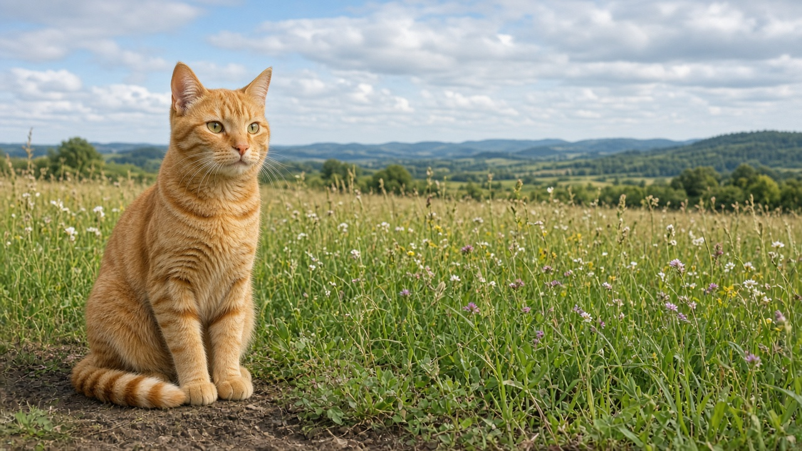
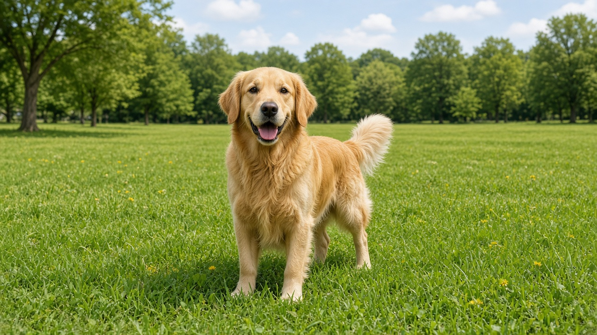
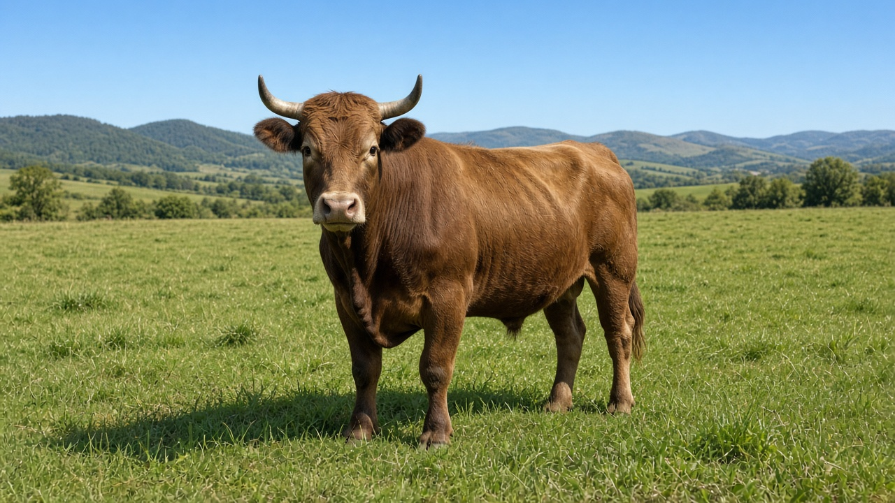
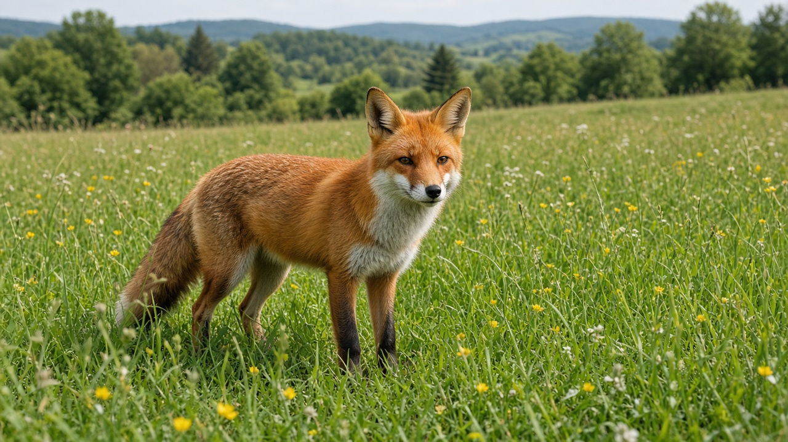
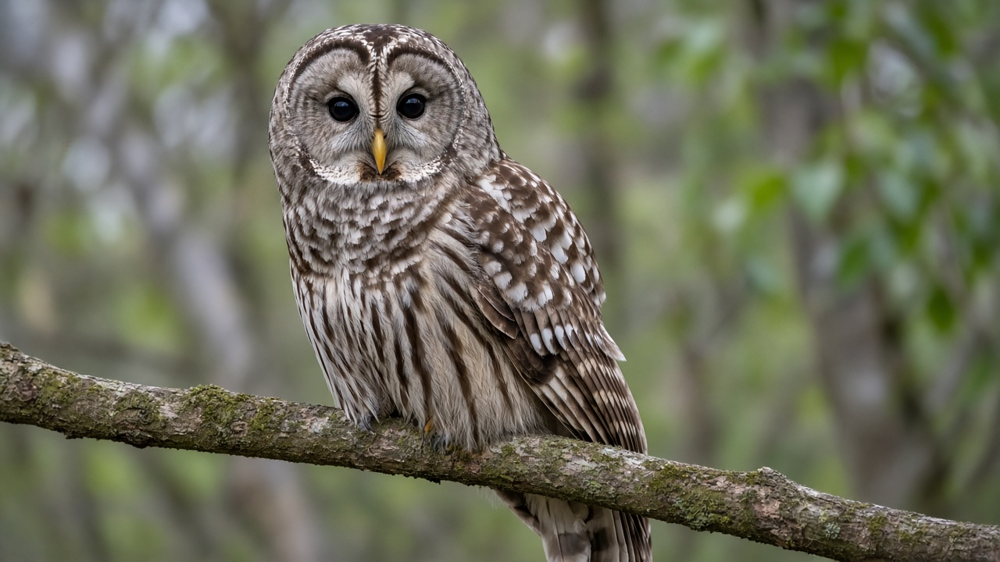
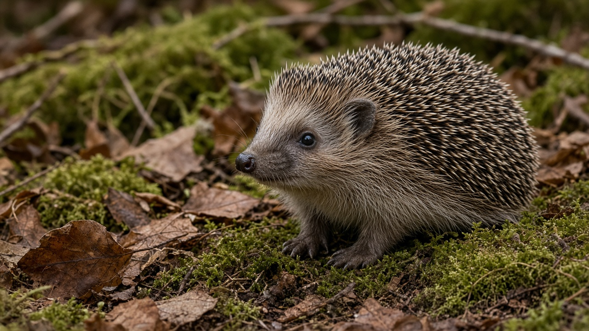
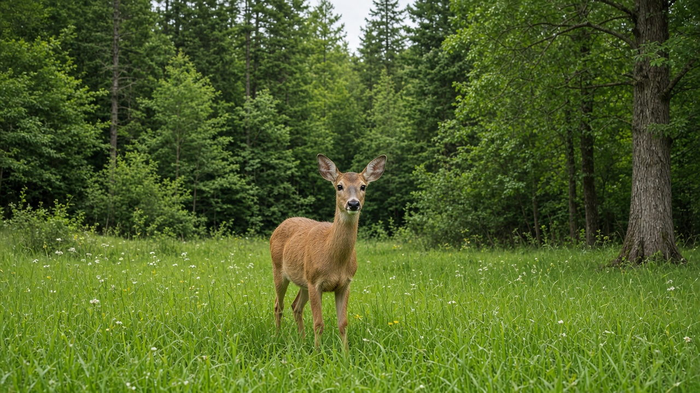

«Мой зоопарк» — визуальный концепт
Макеты к ZOO_CONCEPT.md. Экраны 16:9 (альбомная ориентация, как в игре). Фото — из assets/animals; эмодзи — заглушки под будущие иконки, маскота и фото зверей, которых пока нет.
0. Весь путь: 5 регионов, 21 зона
Схема длинной карты (в игре — прокрутка). Между регионами — транспорт-переход как отдельная награда. Подводный мир и вулкан Затерянного мира видны издалека с самого начала. Яйцо динозавра появляется в конце региона I и трескается после каждого праздника.
1. Карта зоопарка — фрагмент региона «Родные края»
Зоны-островки вдоль дорожки. Двор пройден (медаль, шарики), Лесная поляна заполняется (пульсирует), дальше — туман и замки. Карта листается вправо к следующим зонам и регионам. Маскот говорит голосом, текст в пузыре — для родителя.






2. Зона «Лесная поляна» — вольеры
Горизонтальная панорама. Заселённые вольеры — чёткие фото-наклейки с табличкой-словом (тап → зверь называет себя и подаёт голос). Следующий — морозное размытое фото с «?» и пульсирующей кнопкой. Дальше — пустые пунктирные. В конце — шатёр праздника под ленточкой: откроется, когда заселены все 7.

3. Прибытие зверя (после уровня)
Главная награда. 3–4 секунды: воздушный шар опускает карточку в вольер, размытие спадает (тот же эффект, что в уровне), зверь подаёт голос, буквы слова подпрыгивают по одной под звук.
4. Праздник зоны — «Прочитай и найди»
На табличке написано слово — оно не озвучивается, ребёнок читает сам и тапает нужного зверя. Раунд на каждого зверя зоны (кружки сверху). Ошибка: карточка мягко покачивается и тускнеет — выбираем дальше, без «неправильно». В регионе I — 3 карточки, потом 4 и 6, с похожими первыми буквами (ЛИСА / ЛОСЬ / ЛЕВ).
5. Праздник пройден — радость и новая зона
6–8 секунд, тап ускоряет. Фейерверк, все звери зоны «танцуют», в центр прилетает медаль, звёзды заполняются по одной, маскот хвалит. Затем камера летит по карте к следующей зоне: туман сдувается, замок трескается, ворота открываются.
6. Особые регионы: Подводный мир и Затерянный мир
Та же структура зоны, другой «вольер». Под водой — стеклянные купола-аквариумы, лучи света, пузыри. У динозавров — каменный частокол, папоротники, вулкан, гнёзда с яйцами. Вместо эмодзи будут реалистичные фото (море) и «музейные» 3D-рендеры (динозавры).
Состояния вольера
Один компонент enclosure.tscn с тремя стилями — переключаются кодом, сами стили лежат в сцене / .tres.
Заселён
Чёткое фото, белая обводка, табличка со словом. Тап → имя + голос зверя, покачивание.
Следующий
Морозное размытие + «?». Пульсирующая кнопка ▶. Тап → уровень с этим зверем.
Закрыт
Пунктирная рамка без фото — «сюрприз». Тап → маскот: «Сначала найдём того, кто рядом!»